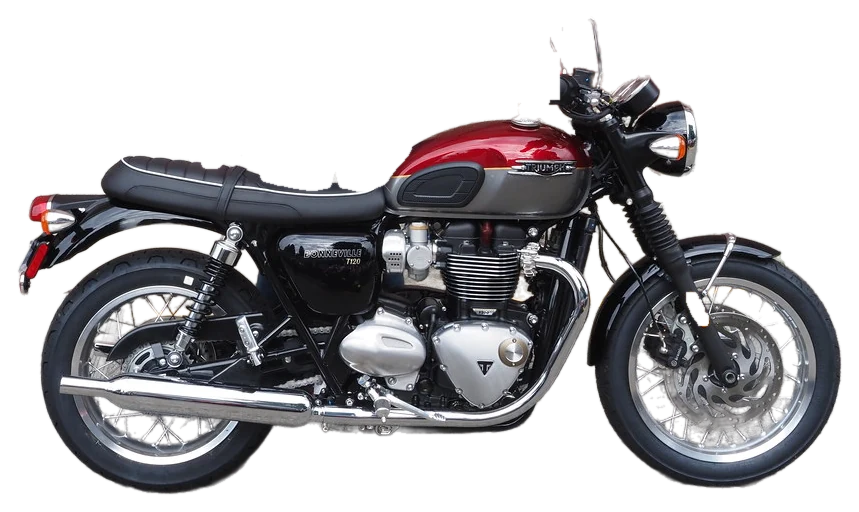

2018 model year, liquid-cooled 1200 HT, Cranberry Red / Aluminium Silver
Bonneville T120
Every assembly, torque value, tool and service task for the 2018 T120, with the page or post each one comes from. Where no source exists, it says so.

Workshop figures
From the T120 column of the November 2016 owner's handbook. Check the 2018 handbook for your motorcycle.
Loading figures…
Service planner
Triumph's scheduled maintenance table, April 2016 service manual pages 84–85. Pick a service to see what it includes.
Torque by source
Every value names its source. Triumph documents come first, then the aftermarket Haynes manual, then owner posts.
Loading torque values…
Sources for this model
Assemblies 30
Front forks
Torque quick reference
April 2016 T120 service manual values. Confirm them for your 2018 motorcycle before tightening.
Garage checklist
Saved in this browserA pre-ride list for you, not Triumph's service schedule.
Ask the records
Searches this project's data, no AI modelTechnical data from your four manuals
Loading audited source records…
Load and search your complete PDFs
This opens the original pages and diagrams from your four PDF files; unlike a summarized database, the original content is not reduced or omitted. Select your documents once per browser session. Nothing is uploaded, transmitted to GitHub, or saved to a server. The full PDF contents remain on your device.
Browse the full document chapter index
Full-document text search scans the selected local PDFs page by page using Mozilla PDF.js (loaded from CDN when online). PDF viewing still works if the CDN is unavailable, and the contents of your PDFs remain local. Source-page buttons open the PDF when it has been loaded.
Sources and limits
Do not use outlines on a photograph, or any value marked inferred or owner-reported, as instructions for safety-critical work without checking the manual for your motorcycle.
US recall 560 / 19V-133
Covers certain 2016–2019 T120 variants. Whether it applies to an India-market motorcycle must be checked with Triumph or an authorised dealer.
Check recall information